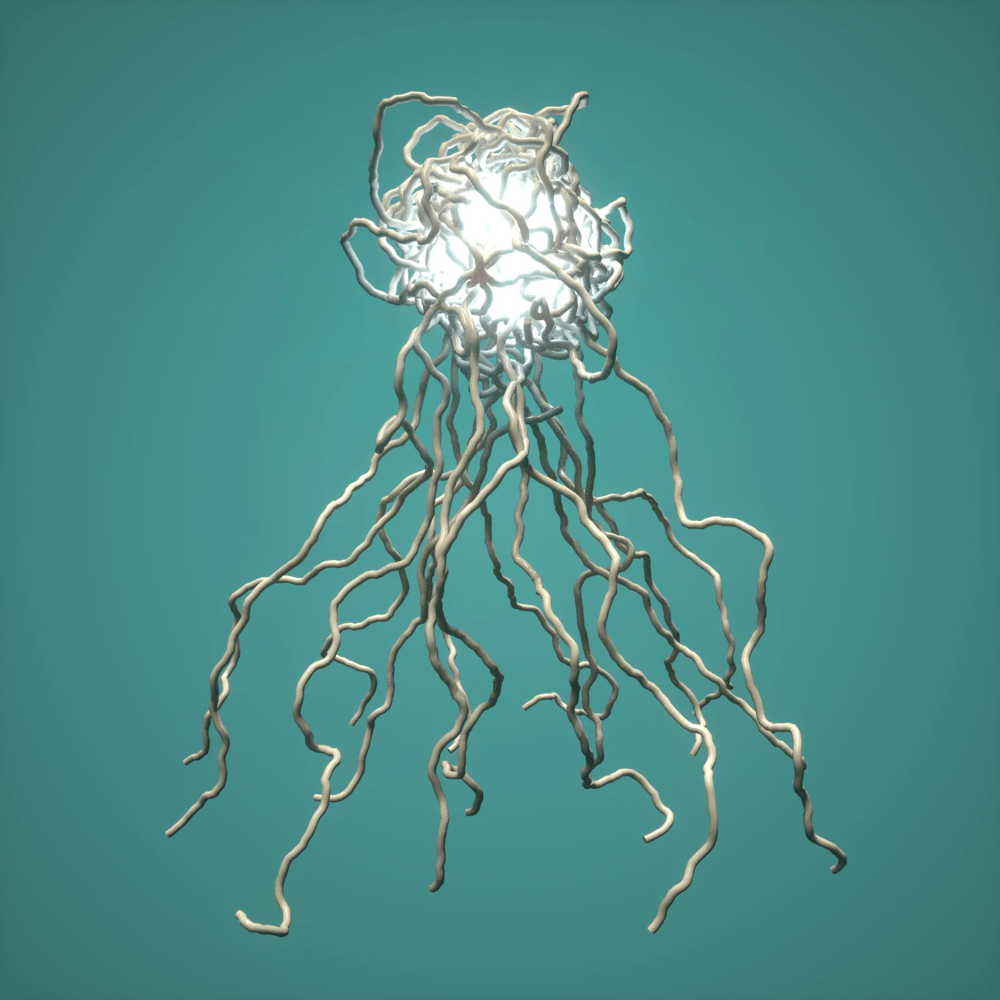
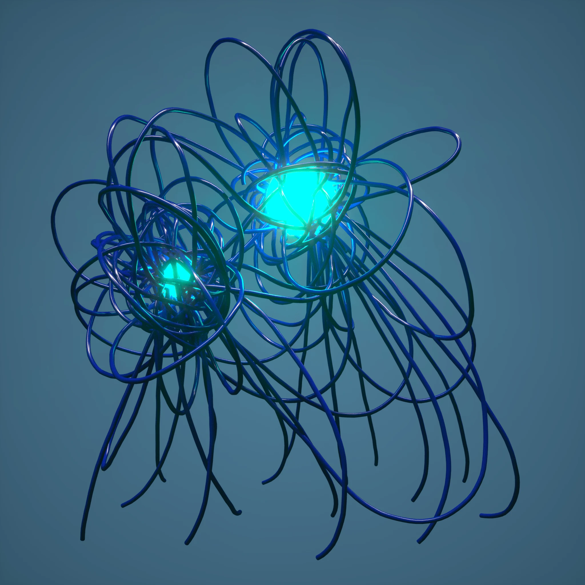
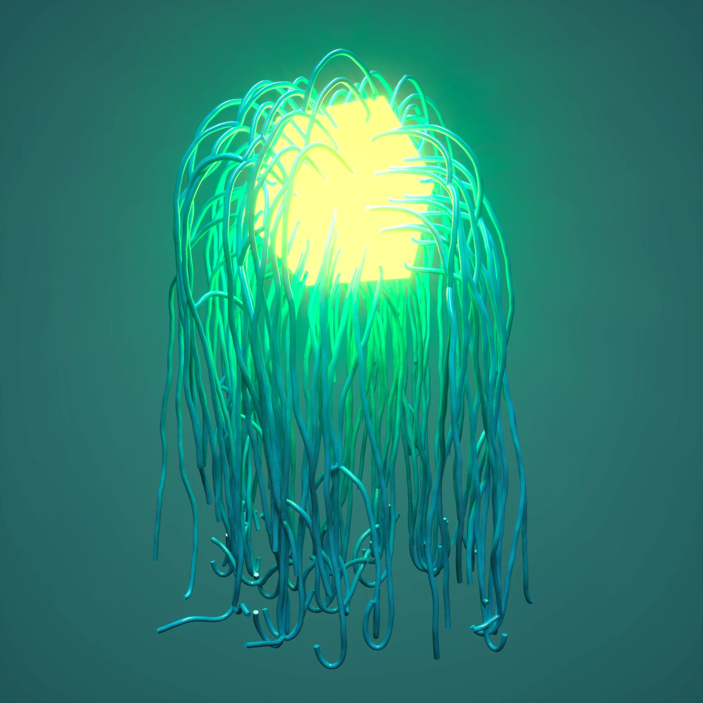
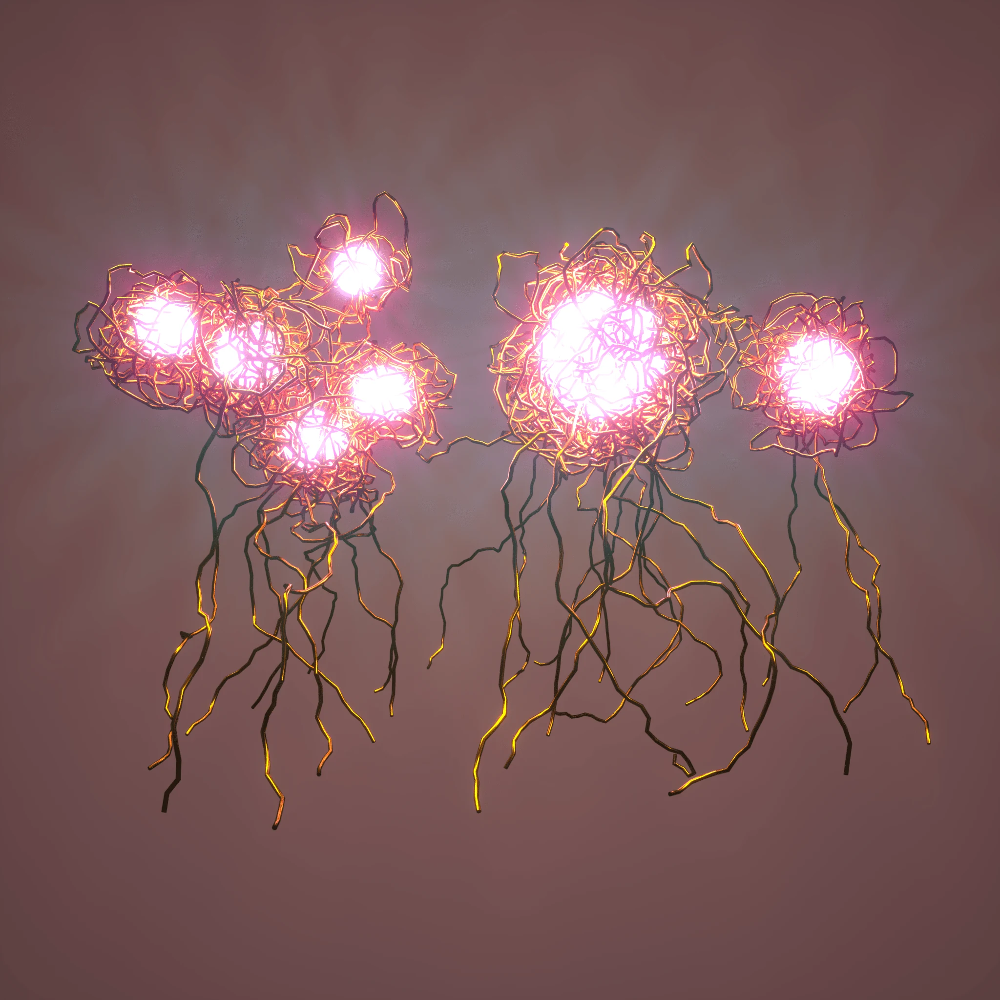
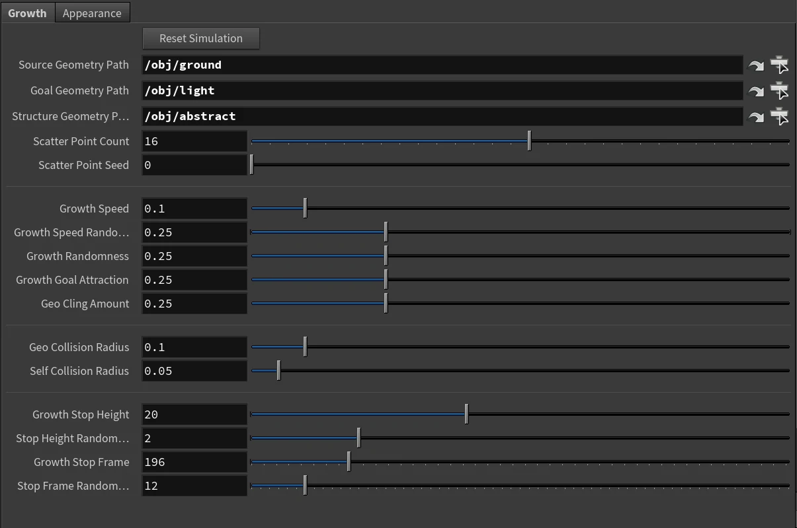
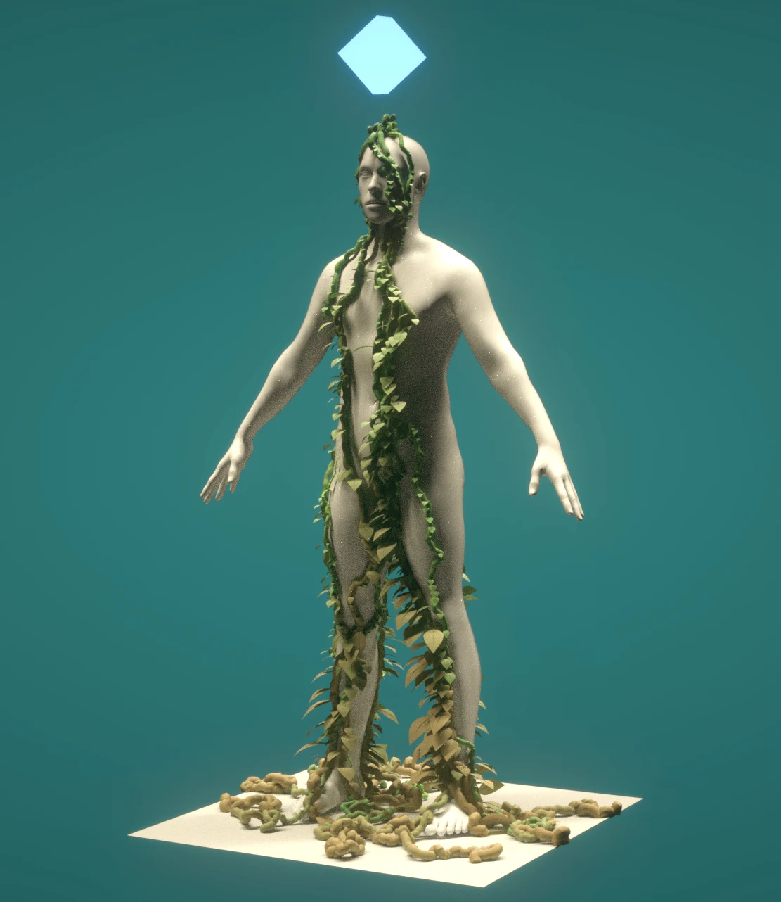
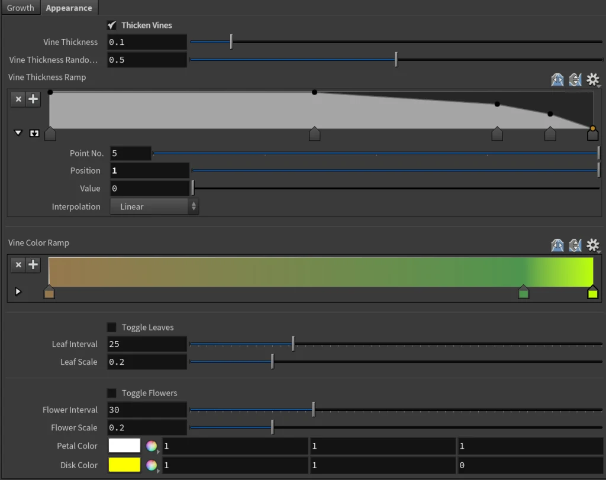
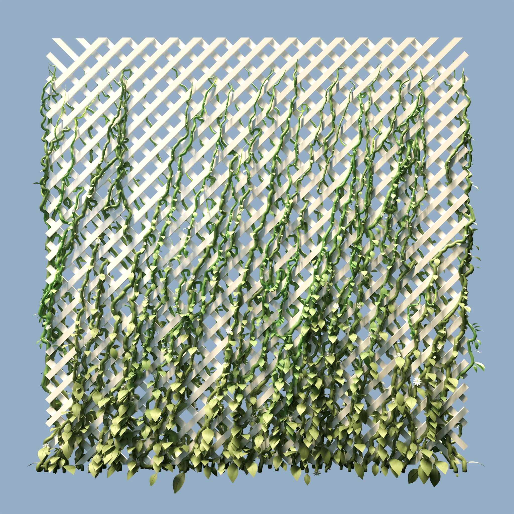

Boids-Inspired Growth Logic
After working on several projects involving Boids using Craig Reynolds' three rules of interaction, I had an idea to simulate vine growth using similar principles. A primary challenge was ensuring the vines would continuously "cling" to surfaces rather than navigating freely through open space like flocking boids; they needed to actively seek out and adhere to structural anchors.




The solver is implemented in Houdini using VEX. On each simulation step, the vine tips evaluate a composite directional vector informed by several weighted factors: orientation toward the goal (light source), proximity thresholds to surrounding surfaces, repulsion from neighboring vines to prevent clumping, and procedural curl noise. Once the heading is computed, points step forward along the surface until reaching designated stop conditions.

Foliage, Age Tracking & Flowers
To make the growth feel organic, leaves needed to sprout selectively—only when the vine segment rested at an appropriate surface angle rather than hanging vertically or clipping inside tight crevices. This is evaluated by measuring the surface normal of the closest geometry and filtering vine points whose alignment falls within a valid angular threshold.

Finally, leaves dynamically emerge as small buds and scale up as the host vine matures, while the primary stems thicken with age. A point attribute counter tracks the age of each segment across the simulation frames, allowing procedural ramps to drive thickness, leaf scale, and pigmentation. Flowers are instantiated using an extension of this age-gated system.

